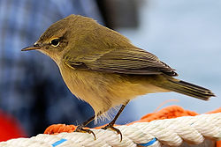
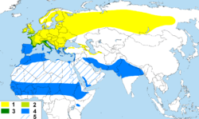

| Chiffchaff |
|  |
Resting during migration at sea
 Birdsong (help·info) Birdsong (help·info) |
| Conservation status |
|
|
| Binomial name |
Phylloscopus collybita
(Vieillot, 1817) |
|  |
1. Breeding; summer only
2. Breeding; small numbers also wintering
3. Breeding; also common in winter
4. Non-breeding winter visitor
5. Localised non-breeding winter visitor in suitable habitat only (oases, irrigated crops) |
The Common Chiffchaff, or simply the Chiffchaff, Phylloscopus collybita, is a common and widespread leaf-warbler which breeds in open woodlands throughout northern and temperate Europe and Asia.
It is a migratory passerine which winters in southern and western Europe, southern Asia and north Africa. Greenish-brown above and off-white below, it is named onomatopoeically for its simple chiff-chaff song. It has a number of subspecies, some of which are now treated as full species. The female builds a domed nest on or near the ground, and assumes most of the responsibility for brooding and feeding the chicks, whilst the male has little involvement in nesting, but defends his territory against rivals, and attacks potential predators.
A small insectivorous bird, it is subject to predation by mammals, such as cats and mustelids, and birds, particularly hawks of the genus Accipiter. It may also acquire external or internal parasites. Its large range and population mean that its status is secure, although one subspecies is probably extinct.

.jpg){kind=link}
{kind=link}